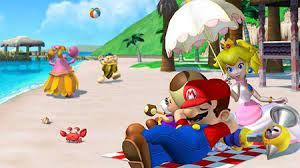

El videojuego tiene lugar en la isla tropical Delfino, donde Mario, Toadsworth, la Princesa Peach y cinco Toads se toman unas vacaciones. Un villano parecido a Mario, conocido como Mario oscuro, destroza la isla con grafitis, y Mario es culpado injustamente por dicho desorden. Mario recibe la orden de limpiar la isla Delfino, usando un dispositivo llamado A.C.U.A.C., mientras salva a la Princesa Peach de Mario oscuro.
 Super Mario Sunshine recibió elogios de la crítica. Los críticos elogiaron los gráficos, la banda sonora del videojuego y la incorporación de A.C.U.A.C. como mecánica de juego, aunque algunos criticaron la cámara del juego y la naturaleza engañosa de A.C.U.A.C. El videojuego vendió más de cinco millones de copias en todo el mundo en 2006, lo que lo convierte en uno de los videojuegos de GameCube más vendidos. Debido al éxito comercial del juego, recibió la distinción Player's Choice en 2003. Super Mario Sunshine fue relanzado en 2020 para Nintendo Switch en la colección Super Mario 3D All Stars.